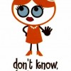

Portalul www.EVZ.ro are comentatori de aleasă calitate şi editori online de mare angajament, care-şi fac treaba cu entuziasm şi simţul răspunderii. Intitulat “cel mai bun portal de ştiri din România”, evz.ro îşi delectează vizitatorii cu opiniile argumentate şi civilizate ale cititorilor, prezentate într-o ţinută grafică originală. E o încântare să parcurgi schimburile de idei care succed aproape fiecare articol publicat de subordonaţii redactorului şef Vlad Macovei. Iată un exemplu care susţine toate aceste afirmaţii. În mărime naturală, extras din pivniţa subsolul materialului ”Cernea l-a înfierat cu mânie proletară pe Becali”, semnat de Gabriel Gachi:
Captură de ecran cu site-ul www.evz.ro
Nu, nu e o scăpare. Preopinentul explorator al tenebrelor dorsale are zeci de intervenţii indexate deja în motoarele de căutare, după cum puteţi verifica aici. În numele libertăţii de exprimare, Evenimentul Zilei câştigă relevanţă pentru căutarea “curlangiu”, ceea ce nu-i chiar cea mai onorabilă poziţionare pe Internet.
Soluţii pentru eliminarea obscenităţilor? Nenumărate
Când ai peste 14 milioane de afişări într-o lună şi eşti în topul site-urilor de ştiri, e de presupus că-ţi poţi permite să plăteşti doi băieţi cu ficatul tare, care să monitorizeze permanent comentariile, cu schimbul. Am zis băieţi pentru că fetele sunt mai pudice, uneori. Nici nu trebuie ţinuţi la birou, ca să consume curentul şi apa companiei Editura Evenimentul şi Capital S.R.L., deţinătoarea domeniului www.evz.ro. Pot vomita la ei acasă când sunt excedaţi de mizeria pe care fişa postului îi obligă s-o şteargă.
Dacă patronii Dan Andronic şi George Marius Păunescu (zis Bobby) sunt prea zgârciţi pentru a susţine vidanjarea umană a opiniilor, există şi rezolvări automatizate relativ simple, care pot împiedica transformarea secţiunii de comentarii în hazna:
- limitarea numărului de semne permise într-un comentariu;
- blocarea comentariilor care conţin caractere speciale, non-standard;
- configurarea inteligentă a filtrelor. Spre exemplu, dacă un text include secvenţa “curl”, comentariul e respins. EVZ nu scrie despre sportul numit “curling”, deci şansele de a cenzura o opinie pertinentă sunt minime;
- moderarea selectivă pe baza clasei de IP sau, dacă dejecţiile provin de la o adresă statică, blocarea accesului.
Sigur că fluxul uriaş de comentarii oferă pretextul de a nu face nimic, aruncând vina pe mizeria mediului virtual. Evident că un redactor n-are cum să filtreze mii de intervenţii pe oră, dacă mai are şi de scris ori de copiat intre timp. Însă soluţii pentru diminuarea fenomenului comentariilor excrement există, dacă îţi pasă. Că veni vorba despre nepăsare, Mediafax vă oferă încă 5800 de fetiţe pe bani, pe lângă cele 6000 de escorte pe care le-am semnalat acum ceva vreme. Conţinut de calitate proaspăt, să ştiţi.


{kind=link}
{kind=link}
Dar “Postacul Curlangiu” a fost identificat?
Sau asemănarea sa suspectă în gândire cu Remus Cernea i-a făcut pe redactorii noştri să nu mai continue investigaţia?
~Nautilus
Comments on this entry are closed.